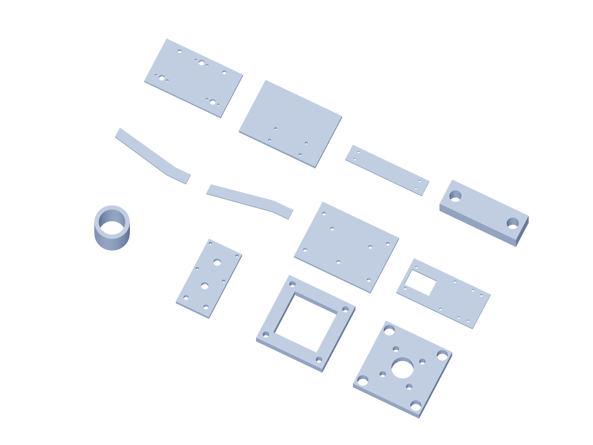

Kit / fabrication13 / 179
Metal kit / 7
6061 aluminum dimensions are finished blank sizes. Bought angles remain angles; shafts, bearings and guide blocks are separate purchased parts.

| Part | Qty | Finished blank / mm |
|---|---|---|
crash-force-center-spacer | 8 | 8 × 8 × 8.35 |
crash-pod-end | 4 | 40 × 80 × 6.35 |
crash-pod-shoulder | 4 | 40 × 40 × 6.35 |
crash-pod-shuttle | 2 | 40 × 40 × 6.35 |
crash-carrier-left | 1 | 200 × 60 × 6.35 |
crash-carrier-right | 1 | 200 × 60 × 6.35 |
crash-magnet-back | 1 | 120 × 90 × 6.35 |
gun-release-tray | 1 | 200 × 80 × 6.35 |
gun-release-back | 1 | 120 × 70 × 6.35 |
crash-output-wall | 2 | 100 × 70 × 6.35 |
crash-ground-crossbar | 2 | 200 × 40 × 6.35 |
vee-seat-keeper | 6 | 24 × 8 × 6.35 |
Use gun-positioner-drill-templates.pdf at actual size. The 3D STEP and registered projections govern formed angles and hub faces.